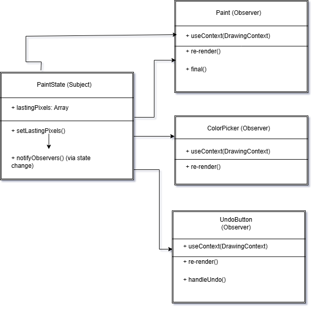
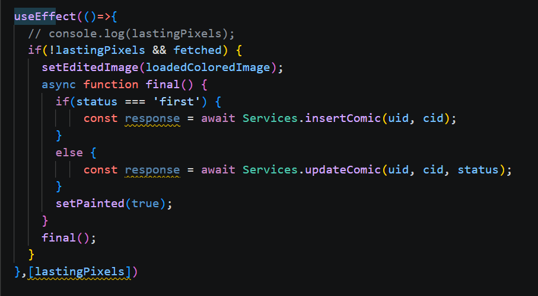

3.3. Módulo Padrões de Projeto GoFs Comportamentais
3.3.1 Introdução
Os Padrões de Projeto Comportamentais integram o catálogo de soluções apresentado pela “Gang of Four” (GoF) [1] para resolver problemas frequentes no desenvolvimento de sistemas orientados a objetos. Diferentemente dos padrões Criacionais, voltados para a criação de objetos, e dos Estruturais, responsáveis pela organização entre classes e interfaces, os padrões Comportamentais têm como foco a interação e a comunicação entre os objetos do sistema, buscando tornar essa colaboração mais flexível e desacoplada.
Esses padrões desempenham um papel importante na definição de fluxos de controle mais dinâmicos, permitindo encapsular algoritmos e modificar comportamentos sem causar impactos no restante da aplicação. Além disso, contribuem para uma melhor distribuição de responsabilidades, favorecendo a manutenção, reutilização e expansão do código [2]. No desenvolvimento de jogos eletrônicos, por exemplo, sua utilização possibilita a modularização de comportamentos complexos e variáveis, como destacado por Figueiredo em sua dissertação [3], tornando os sistemas mais adaptáveis às constantes mudanças e necessidades de interação.
Participantes
Tabela 1: Participantes
| Participantes | Função | Data | Hora |
|---|---|---|---|
| Ana Carolina Madeira Fialho | ### | ### | ### |
| Davi Monteiro de Negreiros | GoF Comportamental - Observer | 21/05 | 09:52 |
| Gabriel Santos Pinto | #### | ### | #### |
| Guilherme Flyan | ### | ### | ### |
| João Marcelo Guimarães Costa Naves | GoF Comportamental - Observer | 21/05 | 14:00 |
| Maria Samara | ### | ### | ### |
| Marjorie Mitzi | ### | ### | ### |
| Pedro Henrique Pereira Santos | GoF Comportamental - Observer | 21/05 | 14:00 |
| Raissa Silva de Oliveira | GoF Comportamental - Observer | 21/05 | 14:00 |
| Yasmin Dayrell | ### | ### | ### |
3.3.2 Metodologia
O estudo e a análise dos Padrões de Projeto Comportamentais foram realizados por meio de uma abordagem colaborativa e prática, com foco na utilização dos conceitos em um sistema de software já existente.
3.3.2.1. Revisão e Seleção de Padrões
O desenvolvimento do estudo teve início com a análise do catálogo de Padrões de Projeto Comportamentais da “Gang of Four” (GoF), apresentado anteriormente. A partir dessa revisão, foram identificados e selecionados os padrões mais adequados às necessidades do projeto MinhaTirinha, especialmente aqueles relacionados à interação do usuário, ao gerenciamento de estados da aplicação e à comunicação entre os componentes da interface. A escolha dos padrões considerou situações presentes no sistema, como o fluxo de desbloqueio dos balões de fala, o gerenciamento das ferramentas de pintura do Cavalete e o salvamento do progresso das tirinhas no ambiente da aplicação mobile.
3.3.2.2. Modelagem e Documentação UML
Para documentar visualmente a estrutura e a aplicação dos padrões, os diagramas UML (Linguagem de Modelagem Unificada) foram elaborados com o Draw.io. Os diagramas produzidos, principalmente de Classe e de Sequência, mapeiam as interações e relações entre os objetos do MinhaTirinha resultantes da aplicação dos padrões Comportamentais.
3.3.2.3. Demonstração e Colaboração
Para assegurar a organização do desenvolvimento e registrar a participação dos integrantes da equipe, as reuniões de planejamento, discussões sobre decisões arquiteturais e apresentações das funcionalidades implementadas foram documentadas ao longo do projeto. Esses registros serviram como evidências do processo colaborativo adotado no desenvolvimento do MinhaTirinha, demonstrando a aplicação prática dos padrões comportamentais, a integração entre os membros do grupo e a contribuição individual na construção das soluções relacionadas à interação e ao fluxo da aplicação.
3.3.3 Observer
O padrão Observer é um padrão comportamental que define uma dependência de um-para-muitos entre objetos, de forma que quando o estado de um objeto (o sujeito) muda, todos os seus dependentes (os observadores) são notificados e atualizados automaticamente. Esse padrão promove baixo acoplamento entre o objeto que gera eventos e os objetos que reagem a esses eventos, facilitando a extensibilidade e a reutilização do código.
"Observer is a behavioral design pattern that lets you define a subscription mechanism to notify multiple objects about any events that happen to the object they’re observing" (REFACTORING GURU, 2026).
 De forma mais simples, o padrão Observer funciona como um serviço de assinatura. Considere subject como objeto a ser observado e subscribers os objetos que devem observar o subject. Ao invés de cada objeto checar, em loop, para verificar se o subject se alterou e ao invés de o subject notificar todos os objetos existentes de que seu estado foi alterado, o subject tem uma lista de objetos inscritos. Ou seja, o subject possui uma lista de subscribers que, a partir dela, sabe quem notificar. No projeto, a lista de subscribers é gerenciada implicitamente pelo React Native através do uso de useState e setState.
Redigido por Davi Negreiros.
De forma mais simples, o padrão Observer funciona como um serviço de assinatura. Considere subject como objeto a ser observado e subscribers os objetos que devem observar o subject. Ao invés de cada objeto checar, em loop, para verificar se o subject se alterou e ao invés de o subject notificar todos os objetos existentes de que seu estado foi alterado, o subject tem uma lista de objetos inscritos. Ou seja, o subject possui uma lista de subscribers que, a partir dela, sabe quem notificar. No projeto, a lista de subscribers é gerenciada implicitamente pelo React Native através do uso de useState e setState.
Redigido por Davi Negreiros.
Estrutura e participantes
Subject(ouPaintState): É a estrutura que centraliza e gerencia o estado da aplicação. No código do projeto, ele armazena dados cruciais comolastingPixels(matriz de pixels pintados),comicStatuse o percentual deprogress. Em vez de métodos imperativos comoattachoudetach, a inscrição dos observadores ocorre de forma declarativa pelo fluxo reativo do React. O métodonotifyObservers()é disparado implicitamente através das funções de atualização de estado (comosetLastingPixels), que forçam a propagação dos novos dados.IObserver(Interface de Observação): No ambiente reativo do React, essa interface é representada pelo contrato de consumo de estados e hooks (useContextou escuta de dependências viauseEffect). Ela define que qualquer entidade inscrita deve ser capaz de monitorar as mutações do estado e engatilhar um ciclo de atualização.- Observadores Concretos (ex.:
Paint,ColorPicker,UndoButton): São as estruturas e componentes funcionais da interface do usuário. - O componente principal
Paintatua como observador viauseEffect, disparando as rotinas de persistênciafinal()e a lógica de cálculo de progressocalculateProgress()sempre que o estado é alterado. - Os componentes
ColorPickereUndoButtonatuam consumindo o contexto e reagindo por meio de umre-render()automático para redesenhar a paleta de cores ou gerenciar o histórico de ações assim que oSubjectaltera o estado.
Diagrama UML

Fonte: João Marcelo Guimarães Costa Naves, Pedro Henrique Pereira Santos e Raissa Silva de Oliveira, Diagrama de arquitetura do time MinhaTirinha (2026).
Aplicação no MinhaTirinha
No contexto do MinhaTirinha, o padrão Observer foi utilizado para estruturar o fluxo reativo do módulo de pintura (Cavalete) no front-end, notificando os componentes da interface e os serviços de persistência em tempo real sobre as mudanças de estado da tela. A dinâmica ocorre da seguinte forma:
- O
PaintStateatua como oSubject, gerenciando e centralizando o estado de modificação dos pixels (lastingPixels), o estado de conclusão dos quadrinhos (comicStatus) e o percentual de progresso. - O componente principal
Paintse registra implicitamente como umObserveratravés do hookuseEffect. Assim que o usuário interage com a tela e altera os pixels, esse observador é notificado pelo React e dispara a rotina de salvamento automático via funçãofinal()(que faz a chamada paraServices.updateComic) e atualiza o progresso com o métodocalculateProgress(). - Componentes adjacentes, como
ColorPicker(atualização do indicador da cor ativa) eUndoButton(controle de histórico de ações), também atuam comoObserversao consumirem o mesmo contexto de desenho. Eles reagem de forma assíncrona a qualquer alteração de estado disparando seus respectivos ciclos dere-render().
Essa abordagem permite desacoplar totalmente a lógica de gerenciamento de dados de pintura do código que atualiza a interface gráfica ou que conversa com a API do backend, tornando extremamente simples adicionar novos ouvintes (como métricas de uso ou animações de conquista) sem modificar a estrutura central do Subject.
Mapeamento do Padrão no Código Real
O diagrama acima ilustra a estrutura geral de observação do ecossistema do Cavalete. Na prática, essa mesma mecânica reativa do padrão Observer pode ser observada no componente de sincronização da tirinha (conforme o trecho de código isolado).

- Subject (Estado Observado): A variável de estado
lastingPixels, que armazena os dados físicos dos pixels modificados na tela. - Concrete Observer (Observador): O hook
useEffect. Ele monitora o array de dependências[lastingPixels].
Assim que o estado dos pixels sofre qualquer alteração (o usuário realiza uma ação de pintura), o useEffect é automaticamente notificado pelo ecossistema do React. Ele acorda, executa a rotina assíncrona final() para persistir os dados no servidor através de Services.updateComic(uid, cid, status), e atualiza a interface mudando o estado visual com setPainted(true).
Vantagens observadas
- Desacoplamento: O
Subject(Provedor) não precisa conhecer os detalhes de implementação ou o comportamento interno de cada componente visual (Observador) que consome seus dados. - Extensibilidade: Novos comportamentos reativos e elementos de tela podem ser adicionados bastando envelopá-los com o hook de consumo do contexto, sem riscos de quebrar o fluxo central.
- Sincronismo Reativo: O modelo aproveita a engine nativa do React para garantir que a propagação de eventos e a atualização visual da pintura ocorram de forma imediata e fluida para o usuário.
3.3.3.1. Vídeo Demonstrativo
Foi gravado, na plataforma do Microsoft Teams, uma reunião para a discussão e a modelagem UML do padrão Command.
3.3.3.2. Opiniões dos Participantes
Raissa Silva de Oliveira
Na minha visão, a aplicação do Observer tornou a comunicação entre o progresso da pintura e os componentes da interface muito mais limpa. Foi simples adicionar o salvamento automático e os indicadores de feedback sem alterar a lógica central do `PaintingProgress`. O diagrama ajudou a esclarecer onde cada observador deve se ligar.
Pedro Henrique Pereira Santos
Percebi que o desacoplamento proporcionado pelo padrão facilita testes unitários e reduz riscos ao estender funcionalidades. Podemos adicionar novos ouvintes (por exemplo, analytics) sem tocar no sujeito, o que é ótimo para manutenção.
João Marcelo Guimarães Costa Naves
Concordo que a integração com o fluxo React (Context / hooks) será direta. O diagrama serviu como guia prático para a implementação e deixou claro como mapear os componentes atuais para observadores.
3.3.5. Referências Bibliográficas
1. GAMMA, Erich et al. Padrões de Projeto: Soluções Reutilizáveis de Software Orientado a Objetos. Tradução de C. F. Lucena e F. S. C. da Silva. Porto Alegre: Bookman, 2007.
2. REFACTORING.GURU. Command. Refactoring.Guru. Disponível em: https://refactoring.guru/pt-br/design-patterns/command. Acesso em: 07 mai. 2026.
3. BLOG GRAN CURSOS ONLINE. Padrões de Projetos GOF: Padrões Comportamentais. Disponível em: https://blog.grancursosonline.com.br/padroes-de-projetos-gof-padroes-comportamentais/. Acesso em: 07 mai. 2026.
4. MILENE. Arquitetura e Desenho de Software - Aula GoFs Comportamentais. Profa. Milene. Acesso em: 07 mai. 2026.
5. REFACTORING GURU. Observer. Disponível em:https://refactoring.guru/design-patterns/observer. Acesso em: 22 maio 2026.
Histórico de Versões 📅
| Versão | Data | Descrição | Autor(es) | Revisor(es) |
|---|---|---|---|---|
1.0 |
07/05/2026 | Adicionando Documentação GoF Comportamental Command | Raissa Silva de Oliveira | Marjorie Mitzi |
1.1 |
08/05/2026 | Adicionando video da reunião GoF Comportamental Command | Raissa Silva de Oliveira | Yasmin Dayrell |
1.2 |
08/05/2026 16:30 | Adicionando documentação do padrão Observer e diagrama | João Marcelo Guimarães Costa Naves, Pedro Henrique Pereira Santos, Raissa Silva de Oliveira | Davi Monteiro de Negreiros |
1.3 |
21/05/2026 23:00 | Retirando padrao command e reforçando documentação Observer | João Marcelo Guimarães Costa Naves, Pedro Henrique Pereira Santos, Raissa Silva de Oliveira | Davi Monteiro de Negreiros |
1.4 |
22/05/2026 | Atualizando as datas de participação | Davi Negreiros | João Marcelo Guimarães Costa Naves |